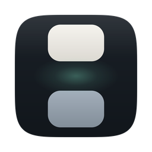
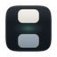
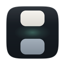
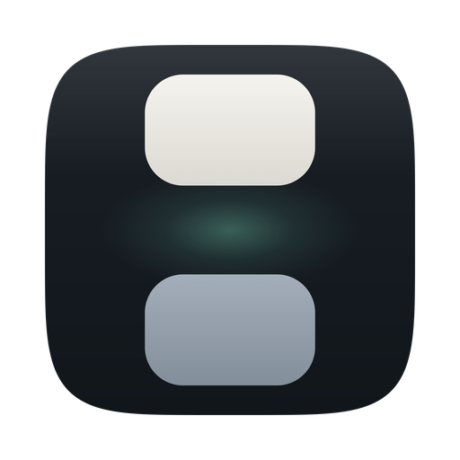
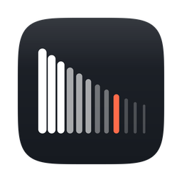
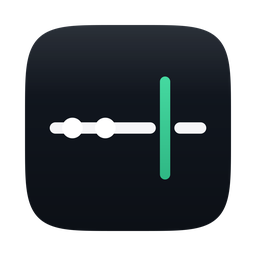

新图标不再画一只钟。它画的是 HH:mm:ss 里那个被所有人忽略、却每秒都在跳动的冒号——两块之间那道缝，就是“秒”发生的位置。

上限暖白＝“时”，下方冷灰＝“分”，中间那道缝是冒号本身，也是秒针永远走不到的那一格。薄荷青的呼吸光是全图唯一的彩色，面积不到 5%——它在说“这里正在发生事情”。
已安装为应用当前图标 · 小尺寸存活率最高，与 macOS 原生图标气质最接近。
旧图标是“时间类应用的标准答案”：蓝色渐变加圆角方块、一个白圆环、一根指针。它准确，但没有信息量——把市场上任何一个时钟 App 的图标盖住名字放进来，都分不出谁是谁。
更要紧的是它说错了话。这个 App 的核心并不是“报时”，而是常驻菜单栏的极简存在感与完全可定制的外观。圆环指针讲的是前者最平庸的那一面。
新图标换掉了整个隐喻层级：从“画一个计时仪器”改成“画时间的最小符号单位”。钟表家族（表盘、指针、沙漏、怀表、闹钟、日历）全部绕开，连一个圆都没有。
同一尺寸、同一背景下的真实渲染效果，非示意。
底板没有用 CSS 那种圆弧圆角矩形，而是真正的 Apple superellipse（|x/a|⁵ + |y/b|⁵ = 1）。n=5 的收敛点在 45° 方向与 Apple 规范（824 安全区／184.3 圆角）几乎完全重合，所以轮廓和系统图标放在一起不会“差一点点”。
前景两块的圆角 85px 来自同一个比例（379 × 22.4%），形成“小 squircle 套在大 squircle 里”的自相似关系——这是它与普通圆角方块的区别所在。
约束只有一条必须守住：缝不能小于块高的三分之一。再窄一点，16px 下两块就会粘连成一根实心柱子，整套设计立刻失效。
App Icon 的成败在最小尺寸。下面是同一个矢量源文件按 4 倍超采样渲染后缩回的真实像素——小尺寸用最近邻放大，不做任何修饰。



靠“一块亮、一道缝、一块暗”的三段式明度节奏。缝隙被抗锯齿糊掉也没关系，轮廓会退化成一根有腰线的柱子——仍然不属于任何系统图标。
上下块的明度差约 40%，即使完全去色、或在菜单栏被系统反色，结构依然成立。颜色只负责区分层级，不负责识别。
全图没有 88:88、没有缩写 “TD”。小尺寸下文字一定糊，占用面积却是最大的，所以一个字符都不放。
菜单栏示意图（非系统截图），左侧系统项为文字占位。
菜单栏图形是同一母题的等缩版：两枚圆角块 + 一道缝，提交为 template image（纯黑 + alpha），系统会自动按明暗反色。StatusBarController 里原本使用的是 clock.fill —— 那正是这次要逃离的陈词滥调，现已一并替换；资产缺失时仍会回落到系统符号。
灰色方块为体量占位，非真实应用图标。
深色底板在浅色窗口里有明确边界，在深色窗口里靠 7% 的边缘高光定义轮廓。它不会像浅底图标那样在白色背景上“化掉”，这是选择深色作为默认外观的实际原因。
顺带一个巧合：App 默认主题本身就是黑底白字 + 70% 不透明度，图标的明度关系与产品默认界面是同一套。
要的是「在呼吸的精密仪器」：精准来自比例，不来自锐利的科技蓝。
88:88 与 “TD”三个方向共用同一套底板与网格规范，切换只需一条命令。除 A 之外，其余方案已渲染好但未安装。
冒号本体放大成主角。两块之间的缝就是“秒”发生的地方，薄荷青呼吸光是全图唯一彩色。
小尺寸存活最好 · 与系统图标气质最接近 · 已安装

不画时间，画时间的密度：十二根竖棒由密到疏，唯一一根信号橘是“此刻”。
图形性最强 · 16px 会糊成灰雾 · 菜单栏需另做简化版

把菜单栏本身画成主角：一条横线被一根竖线穿过，横线在交点处断开——秒正在贯流。
最贴产品行为 · 元素最多，小尺寸略吵

同一几何，只换配色。适合作为“自定义浅色主题”的视觉呼应。
# 重新安装某个概念为应用图标
python3 icon-design/build_icons.py --concept B
# 只渲染预览，不动资产目录
python3 icon-design/build_icons.py --render-only色板在 build_icons.py 顶部的 PALETTE_DARK / PALETTE_LIGHT 里，改一处即可整体换色——这正好呼应 App 自己的“可定制外观”。
export DEVELOPER_DIR=/Applications/Xcode.app/Contents/Developer
xcodegen generate
xcodebuild -project TimeDisplay.xcodeproj \
-target TimeDisplay -configuration Release build本机 xcode-select 指向 Command Line Tools，直接跑 xcodebuild 会报 “requires Xcode”，用 DEVELOPER_DIR 覆盖即可（Xcode 26.6 已安装）。